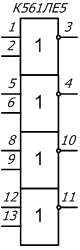

Микросхема К561ЛЕ5
(КМ561ЛЕ5, КФ561ЛЕ5, ЭК561ЛЕ5, ЭКФ561ЛЕ5)
Микросхемы представляют собой четыре логических элемента 2ИЛИ-НЕ. Содержат 49 интегральных элементов.

Рис. 1 - Условное графическое обозначение микросхем
К561ЛЕ5, КМ561ЛЕ5, КФ561ЛЕ5, ЭК561ЛЕ5, ЭКФ561ЛЕ5
Назначение выводов:
1 — вход A1;
2 — вход B1;
3 — выход C1;
4 — выход C2;
5 — вход A2;
6 — вход B2;
7 — общий;
8 — вход A3;
9 — вход B3;
10 — выход C3;
11 — выход C4;
12 — вход A4;
13 — вход B4;
14 — напряжение питания.
Таблица 1
| Напряжение питания | 3…15 В |
| Выходное напряжение низкого уровня . . . . . . . . . . . . . . . . . . . . . . | ≤0,01 В |
| Выходное напряжение высокого уровня: | |
| при Uп= 10 В | ≥9,99 В |
| при Uп= 5 В | ≥4,99 В |
| Максимальное выходное напряжение низкого уровня: | |
| при Uп= 10 В | ≤2,9 В |
| при Uп= 5 В | ≤0,95 В |
| Минимальное выходное напряжение высокого уровня: | |
| при Uп= 10 В | ≥7,2 В |
| при Uп= 5 В | ≥3,6 В |
| Ток потребления: | |
| при Uп= 10 В | ≤5 мкА |
| при Uп= 5 В | ≤0,5 мкА |
| Входной ток низкого (высокого) уровня при Uп= 10 В | ≤0,2 мкА |
| Выходной ток низкого уровня: | |
| при Uп= 10 В | ≥0,6 мА |
| при Uп= 5 В | ≥0,3 мА |
| Выходной ток высокого уровня: | |
| при Uп= 10 В | ≥0,3 мА |
| при Uп= 5 В | ≥0,25 мА |
| Время задержки распространения при включении: | |
| при Uп= 10 В | ≤115 нс |
| при Uп= 5 В | ≤180 нс |
| Время задержки распространения при выключении: | |
| при Uп= 10 В | ≤130 нс |
| при Uп= 5 В | ≤260 нс |
Таблица 2
| Напряжение питания | 3…15 В |
| Напряжение на входах | -0,2…(Uп+0,2) В |
| Максимальная потребляемая мощность при T= 25 °C | 150 мВт |
| Максимальный допустимый ток на один (любой) вывод | 10 мА |
| Температура окружающей среды | -45…+85 °C |
Источники
kiloom.ru - К561ЛЕ5, КМ561ЛЕ5, КФ561ЛЕ5, ЭК561ЛЕ5, ЭКФ561ЛЕ5